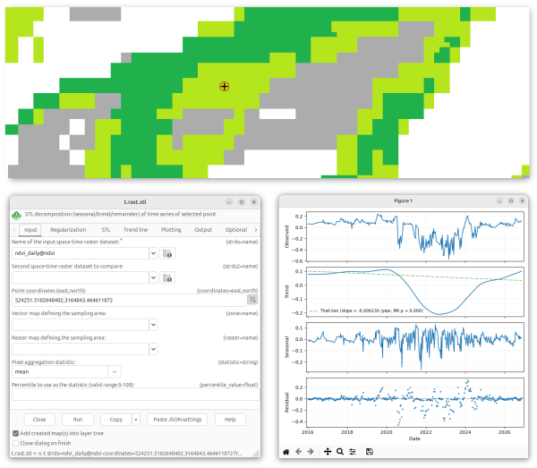
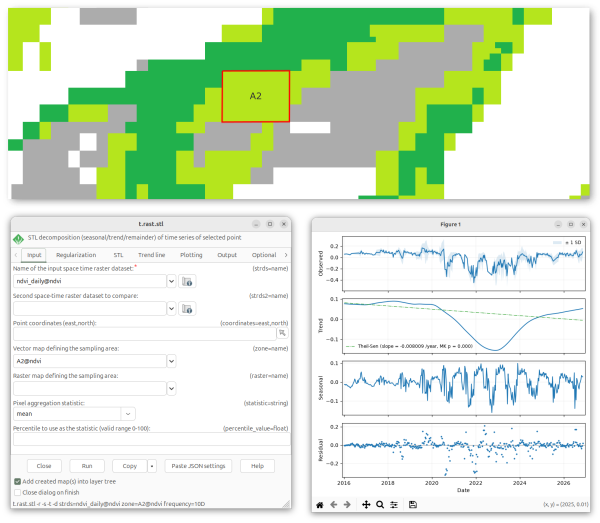
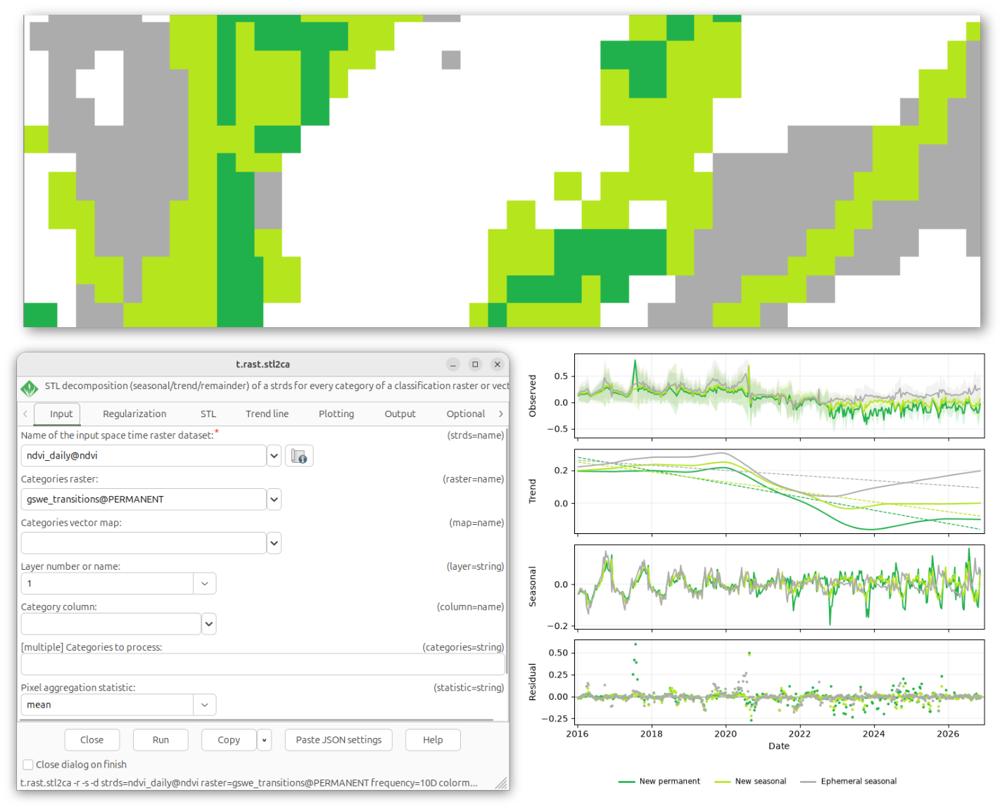
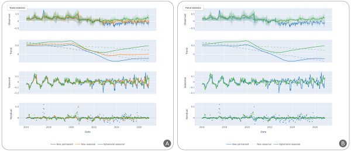

DESCRIPTION
t.rast.trend included tools for STL decomposition (Seasonal- Trend
decomposition using LOESS) and trend analysis of a space-time raster dataset
(STRDS):
t.rast.stl
The t.rast.stl tool decomposes and plots the time series of the values at
a single point using STL. Optionally, one or more trend regressions can be
fitted to the deseasonalized series and drawn on the trend panel, including an
ordinary least-squares (OLS) line, a robust Theil-Sen line, and/or a Generalized
Additive Model (GAM) curve, shape-constrained (monotone) by default.

Alternatively, t.rast.stl can compute for each time step the mean/median
of all pixels in an area defined by a vector or raster layer, and use those
values as input for the STL analysis. In the figure below, this is done for the
area A2.

t.rast.stl2ca
t.rast.stl2ca extracts, for every category of a raster map or
vector map, the time series of a space-time raster dataset (STRDS), as the mean,
median or other statistic of the pixels in that category. It then carries out a
STL analysis on each category's series and draws every category together on one
multi-panel plot comparing the observed series, trend, seasonal
and residual (remainder) components. Optionally, a robust Theil-Sen trend
regression can be fitted to each category's deseasonalized series and drawn on
the trend panel.
The categories can be defined by a categorical raster layer (raster), or
a vector map's features grouped by an attribute column
(map/layer/column). This can, for example, be a land-cover
raster, or a vector of administrative units grouped by region name.

By default, the tool uses the matplotlib library to create the plots.
Alternatively, the plotly library can be used, which creates a webpage with an
interactive plot, allowing you to select one or more categories, thus making it
easier to compare trends in case there are many categories.

Acknowledgement
This tool was developed for the
Save the tiger! Save the Grasslands! Save the Water!
project, funded by the Dutch Research Council (NWO) under award
<https://doi.org/10.61686/UYHYF97856>.
Notes
Installing t.rast.trend installs both tools together with the shared
trendlib they depend on. Installing t.rast.stl or
t.rast.stl2ca on its own does not install trendlib, so install
t.rast.trend first (or alongside) if installing either tool individually.
SEE ALSO
t.rast.stl,
t.rast.stl2ca
AUTHOR
Paulo van Breugel,
Innovative Biomonitoring
and
Climate-robust Landscapes
research groups at the HAS green academy